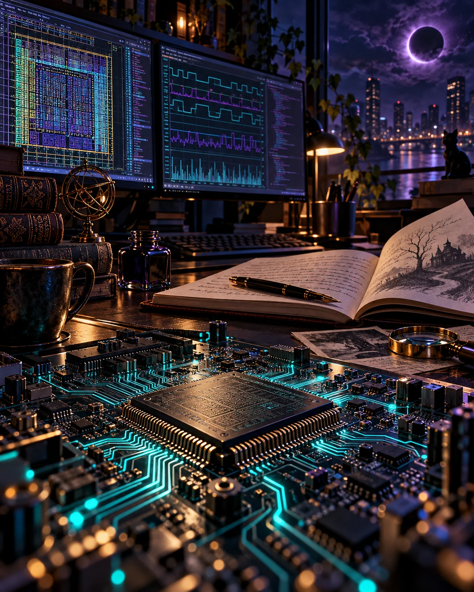

RTL IP DELIVERY01
From results
to release readiness.
Simulation results, static checks, synthesis and equivalence reviews—bringing the evidence together around an IP delivery.
PCIe · RTL IP · Quality reviews

+ ANJANEYA MEDIDI / NANI
VLSI Chip Design Engineer.
Automation developer. Fiction writer.
I investigate how things work.
And imagine what happens next.
01 / ENGINEERING
DETAILS THAT MAKE THE DIFFERENCEMy work sits at the intersection of RTL IP release quality, verification, and practical automation.
Simulation results, static checks, synthesis and equivalence reviews—bringing the evidence together around an IP delivery.
Following assertion failures, waveforms, and logs to understand what happened—and which assumption needs another look.
Python and Shell utilities, regression interfaces, release dashboards, and document-based assistants.
02 / PUBLISHED RESEARCH
IEEE XPLORE · 2023Co-authored
research papers
Research experience at IIITDM Kurnool, including the IHUB-NTIHAC-sponsored project “Real-time Intelligent System Design for Digital Communication.”
03 / THE PERSON BEHIND THE WORK
ENGINEER. RESEARCHER. WRITER.I’m Anjaneya Medidi.
You can call me Nani.
I work in VLSI Chip Design at Cadence in Bengaluru. My focus is RTL IP release quality, verification, and the tools that make engineering workflows easier to follow.
I studied Electronics and Communication Engineering with a specialization in Design and Manufacturing at IIITDM Kurnool. Along the way, I worked in circuit research and led both literary and robotics activities.
Outside engineering, I’m writing a novel. The same curiosity that draws me into a difficult debug also keeps me turning a story over until its pieces connect.
THE PATH SO FAR
Cadence · Bengaluru
Cadence · PCIe controller and subsystem releases
Maven Silicon · Advanced design and verification training
IIITDM Kurnool · Digital communication research
IIITDM Kurnool · High-throughput DAC circuit design
04 / ENGINEERING TOOLKIT
THE RIGHT TOOL. THE RIGHT QUESTION.From investigating a waveform to making a workflow repeatable.
Xcelium · SimVision · VCS
Waveforms · Assertions · Testbench investigationJasperGold · Superlint · CDC
Report reviews · Findings · Qualification statusGenus · Conformal · Vivado
Synthesis · LEC · Timing reviewPython · Shell · PyQt5 · ReportLab
Linux · Git · SVN · Engineering utilitiesAdvanced VLSI Design and Verification — Maven Silicon
Digital Design and Verification Academic Curriculum v1.0 — Cadence
Functional Safety: ISO 26262 Introduction — Cadence
Semiconductor 101 — Cadence
Lead, Sahithya — Literary Club of IIITDM Kurnool
Robotics Lead, Mech-an-Idea — Mechanical Society of IIITDM Kurnool
AI for Everyone — DeepLearning.AI
05 / BEYOND THE WORKBENCH
FICTION · IN PROGRESSSome people are never meant to stay.
A princess displaced into another century. A mechanic carrying a past he cannot repair. Their lives cross in a world where time holds more secrets than answers.
I’m developing The Twilight—a novel about the people caught between eras, and the things they stand to lose when those worlds meet.
Manuscript in development06 / START A CONVERSATION
BENGALURU, INDIA